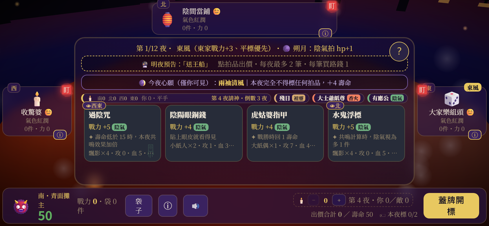
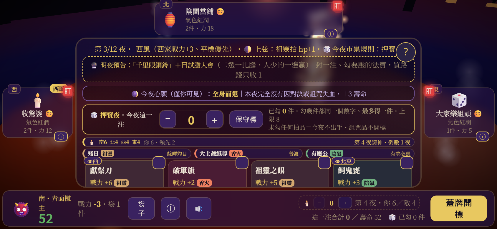
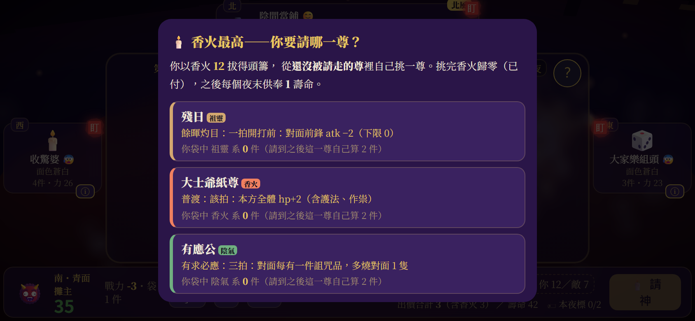
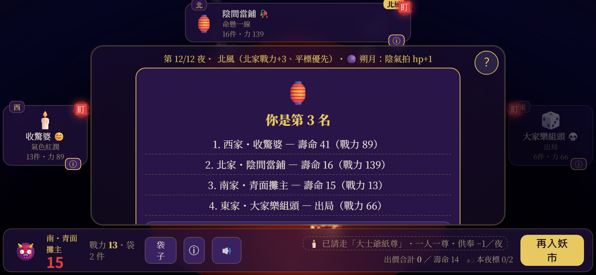
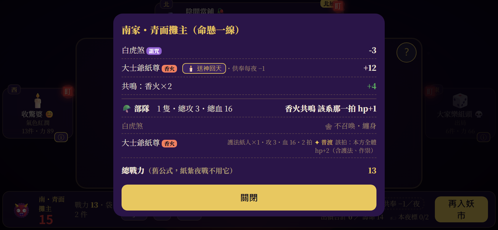
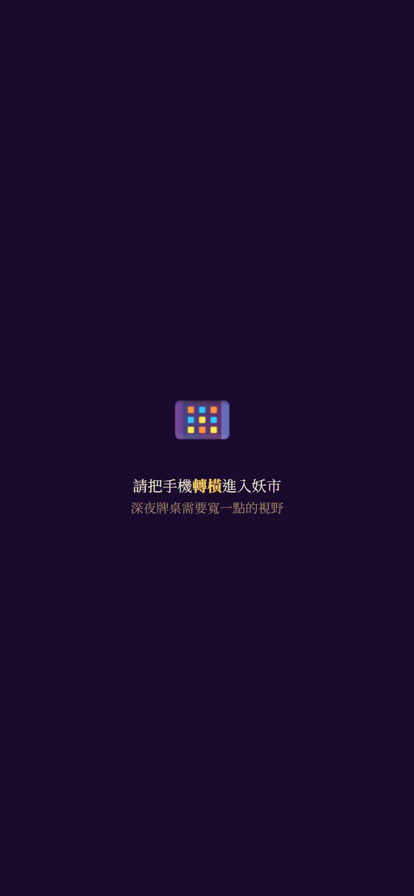

請神 3.0「香火池」— H7 版面 contact sheet
v0.53、844×390、deviceScaleFactor=2、solo 局、真人＝南家（青面攤主）。
由 tests/tools/legend-drive.mjs --shots= 在真瀏覽器逐頁拍下，未經裁切或後製。
① 第 1 夜・出價頁平常態（slim）：香火榜一行＋三尊待請卡擠成同一列，在中央面板法寶卡正上方

② 請神夜前一夜（第 3 夜）・出價頁展開態（wide）：拆成兩列，待請卡多印招式名；香火榜寫「第 4 夜請神・倒數 1 夜」

③ 真人得主的選尊視窗三尊各印陣營、招式一句、你袋中同系件數；點一下就是請那一尊

④ 局末結果頁（seed 1）順帶存證：整局跑完 0 console error

⑤ 袋子面板（H11 部隊預覽）傳說那一列帶「送神回天」鈕與「供奉每夜 −1」；共鳴、部隊總計、招式一句都在，不溢出

⑥ 手機直式（390×844）#rotateHint 整片蓋住、#shrines 收起——直式蓋板行為與 2.0 相同
